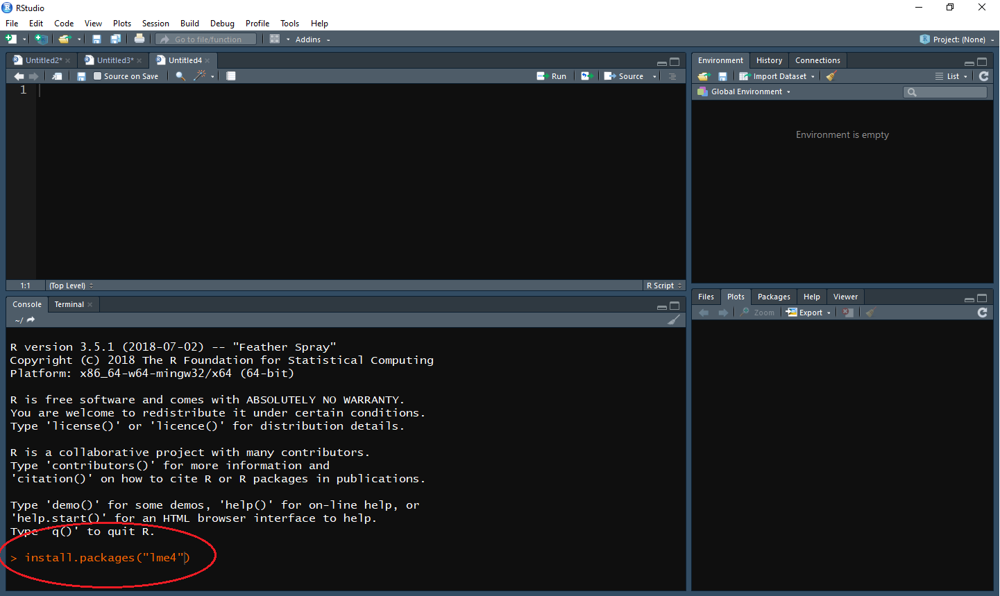
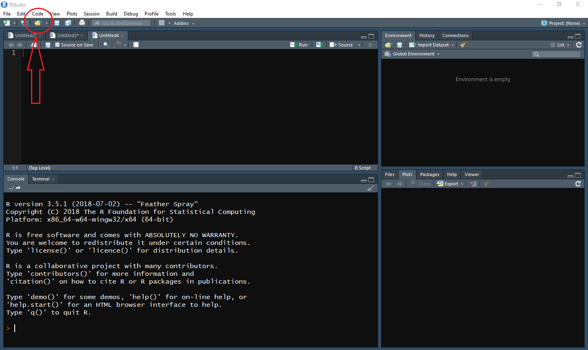
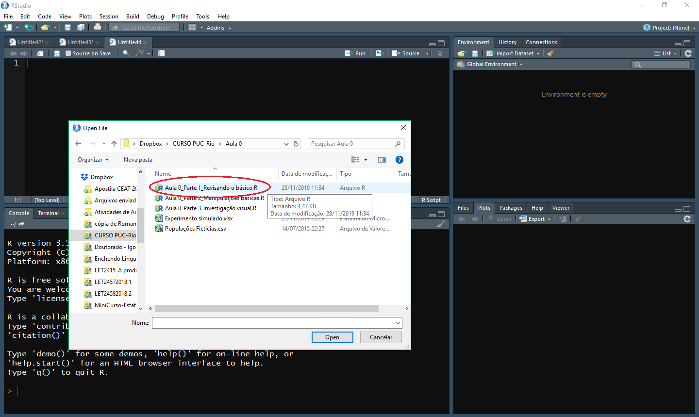
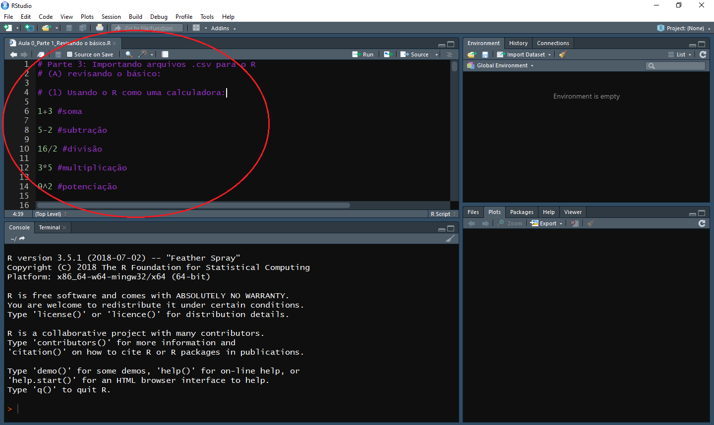
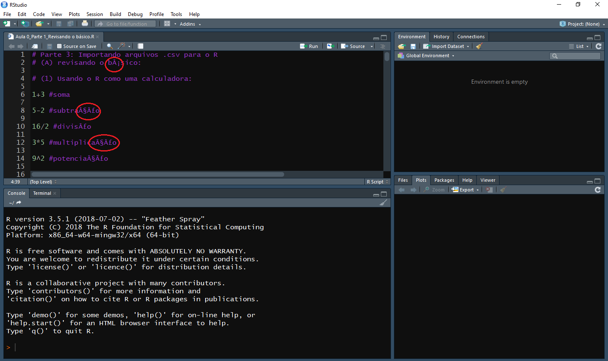
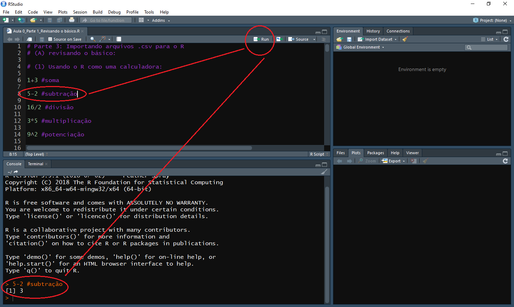

Instalando o R
Recursos tecnológicos para o curso
- Ter instalado o R, baixando-o aqui;
- Ter instalado o R Studio, baixando-o aqui;
- Ter instalado os pacotes que usaremos no curso. São eles:
Se você não sabe como instalar um pacote, basta, após os passos 1 e 2, abrir o R Studio e digitar nolme4 lattice dplyr tidyr afex ggplot2 carConsoleo comandoinstall.packages(“nome do pacote entre aspas”). Após fazer isso, aperteEntere aguarde a instalação. Veja na imagem abaixo o exemplo de instalação do pacotelme4.

Você deve fazer o mesmo para todos os pacotes listados acima.
- Ter baixado os arquivos que usaremos no curso, disponíveis neste repositório.
Recomendações quanto à Aula 0
Antes de começar a usar o R, você precisará baixar alguns scripts do repositório do curso. Um script é um arquivo de formato .R que contém comandos executáveis pelo programa. Depois de baixá-los, você terá que carregá-los no R. Se você quiser fazer isso (e não sabe nada de R), basta seguir os seguintes passos:
- Abra o R Studio;
- Clique na pastinha de abrir
scripts, como na imagem abaixo:

- E carregue o arquivo de nome: Aula 0_Parte 1_Revisando o básico.R

- O
scriptvai aparecer como abaixo, normalmente na parte de cima da tela. Observe que as cores no seu provavelmente estarão diferentes. O meu é roxo porque roxo é legal.

- Observe que se ele aparecer com problemas nos acentos, como na imagem abaixo, você deve ir em
File > Reopen with encodin > UTF-8. Com isso ele irá automaticamente abrir como acima.

- Agora que você carregou o seu
script, você pode ir seguindo as instruções nele. Tudo que estiver precedido por#é código não executável (é apenas instrução para você). Tudo que não estiver precedido de#é código executável (é um comando para o R fazer algo). Para executar um código, você tem três opções: - clicar na linha em que ele está;
- selecioná-lo e então clicar em
Run, como na imagem:

Na imagem acima, como o cursor estava sobre a linha 8, ao clicar em Run, foi executado no Console (lá embaixo) a subtração de 5-2, nos dando o resultado 3 (aquele 1 entre colchetes [1] está ali apenas para indicar que a resposta está na linha 1.). Tudo que está depois de # não é executado (foi apenas impresso na tela).
Um modo mais fácil de executar um comando é, em vez de clicar em Run, apertar simultaneamente, no teclado em ctrl + Enter (Windows) ou command + Enter (Mac). Mas lembre-se que você tem de ter clicado antes sobre a linha que deseja executar.
Espero que você se divirta com esse trabalho tanto quanto eu me diverti fazendo-o para você.